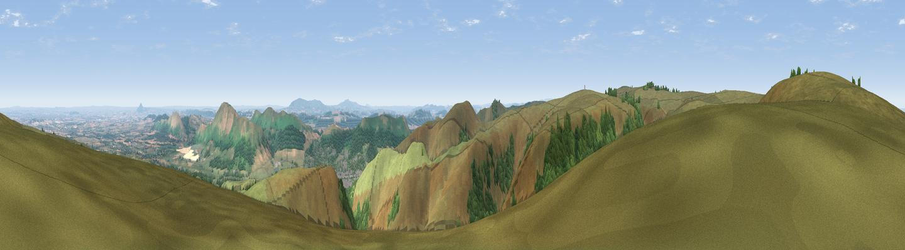

Haddon Hill
#4151 in England · top 12% of its area beats it · near All StrettonWhere it is
The exact computed spot (SO 43825 95338). Click the marker for map links.
The view, rendered

A 360° render of this exact spot computed from the terrain model, tree cover and land cover — summer colours, afternoon light, calibrated against photographs of famous viewpoints. Real trees, hedges and buildings will differ in detail.
The panorama
Grey silhouette: terrain skyline in each direction (720 bearings, Earth curvature and refraction included). Dashed green: skyline with trees (+15 m) and buildings (+8 m) as obstacles. Blue strip: how far the ground is visible on each bearing.
Where the view opens
Wedge length = distance to the farthest visible ground on that bearing (vegetation-aware). Rings at 10, 25 and 50 km.
What fills the view
69% grassland · 27% woodland · 3% cropland ·
Angular shares of the visible panorama (visual magnitude), not map area. Landscape diversity 0.33 (0–1 Shannon).
Key numbers
More beautiful places nearby
The staircase of upgrades: each row has a higher view potential than everything closer. Driving times are estimates from straight-line distance, calibrated against real road routing — check an actual route before setting out.
| Place | Direction | Drive | Score |
|---|---|---|---|
| Viewpoint near All Stretton | NW · 0 km | ~1 min | 73.6 |
| Yearlet | S · 2 km | ~5 min | 74.4 |
| Pole Bank | WSW · 2 km | ~6 min | 74.7 |
| Ragleth Hill | SSE · 4 km | ~8 min | 78.6 |
| Caer Caradoc Hill | E · 4 km | ~9 min | 81.7 |
| The Lawley | ENE · 6 km | ~13 min | 85.8 |
| Viewpoint near Little Wenlock | NE · 23 km | ~37 min | 86.6 |
| North Hill | SE · 59 km | ~81 min | 86.8 |
52.55297, -2.82994 · source: osm peak · position refined by local search. Computed location — check access rights before visiting.